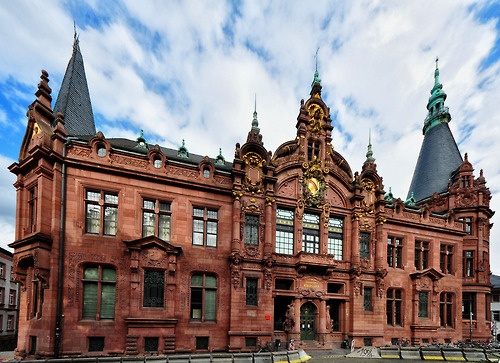

Heidelberg University

რატომ უნდა აირჩიო Heidelberg University?
Heidelberg University გერმანიის უძველესი უნივერსიტეტია და მსოფლიოში ერთ-ერთ ყველაზე პრესტიჟულ სასწავლებლად ითვლება. იგი განსაკუთრებით ცნობილია მაღალი ხარისხის განათლებით, საერთაშორისო გარემოთი და ძლიერი კვლევითი საქმიანობით.
რით არის ცნობილი?
- Medicine
- Biology
- Natural Sciences
- Law
- Research Programs
უპირატესობები
- საერთაშორისო აღიარება
- თანამედროვე ლაბორატორიები
- მაღალი დასაქმების მაჩვენებელი
- სტუდენტური გაცვლითი პროგრამები
როგორ ჩააბარო?
ჩარიცხვისთვის, როგორც წესი, საჭიროა:
- სკოლის ატესტატი
- ენის სერტიფიკატი (ინგლისური ან გერმანული)
- CV / Resume
- სამოტივაციო წერილი
- პასპორტის ასლი
ვისთვის არის საუკეთესო არჩევანი?
უნივერსიტეტი საუკეთესო არჩევანია იმ სტუდენტებისთვის, რომლებიც დაინტერესებულნი არიან მედიცინით, მეცნიერებით, კვლევებითა და აკადემიური კარიერით.